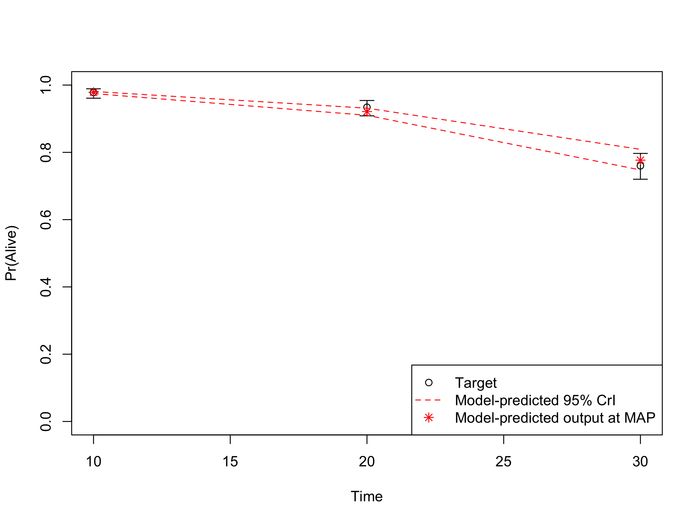
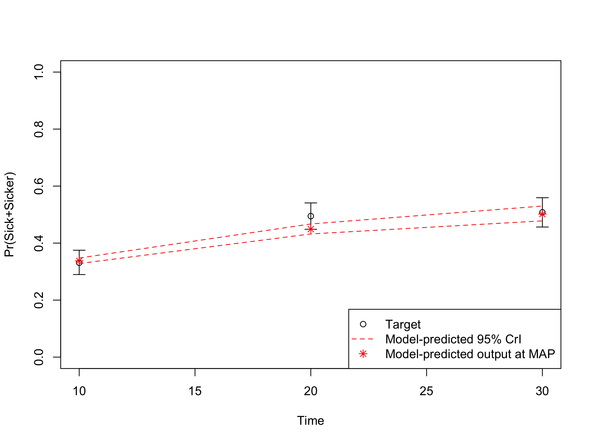
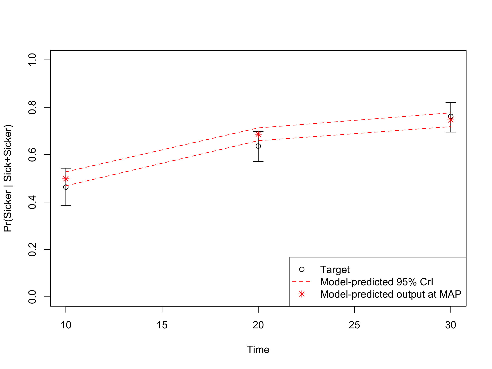

Chapter 4 Validation
In this forth component, we check the internal validity of our Sick-Sicker model before we move on to the analysis components. To internally validate the Sick-Sicker model, we compare the model-predicted output evaluated at posterior parameters against the calibration targets. This is all done in the 04_validation.R script in the analysis folder.
In section 04.2 Compute model-predicted outputs, we compute the model-predicted outputs for each sample of posterior distribution as well as for the MAP estimate. We then use the function data_summary to summarize the model-predicted posterior outputs into different summary statistics.
## function (data, varname, groupnames)
## {
## summary_func <- function(x, col) {
## c(mean = mean(x[[col]], na.rm = TRUE), median = quantile(x[[col]],
## probs = 0.5, names = FALSE), sd = sd(x[[col]], na.rm = TRUE),
## lb = quantile(x[[col]], probs = 0.025, names = FALSE),
## ub = quantile(x[[col]], probs = 0.975, names = FALSE))
## }
## data_sum <- plyr::ddply(data, groupnames, .fun = summary_func,
## varname)
## data_sum <- plyr::rename(data_sum, c(mean = varname))
## return(data_sum)
## }
## <bytecode: 0x10e2a6320>
## <environment: namespace:darthpack>This function is informed by three arguments, data, varname and groupnames.
The computation of the model-predicted outputs using the MAP estimate is done by inserting the v_calib_post_map data into the previously described calibration_out function. This function creates a list including the estimated values for survival, prevalence and the proportion of sicker individuals at cycles 10, 20 and 30.
In sections 04.6 Internal validation: Model-predicted outputs vs. targets, we check the internal validation by plotting the model-predicted outputs against the calibration targets (Figures 4.1-4.3). The generated plots are saved as .png files in the figs folder. These files can be used in reports without the need of re-running the code.

Figure 4.1: Survival data: Model-predicted outputs vs targets.

Figure 4.2: Prevalence data of sick individuals: Model-predicted output vs targets.

Figure 4.3: Proportion who are Sicker, among all those afflicted (Sick + Sicker): Model-predicted output.